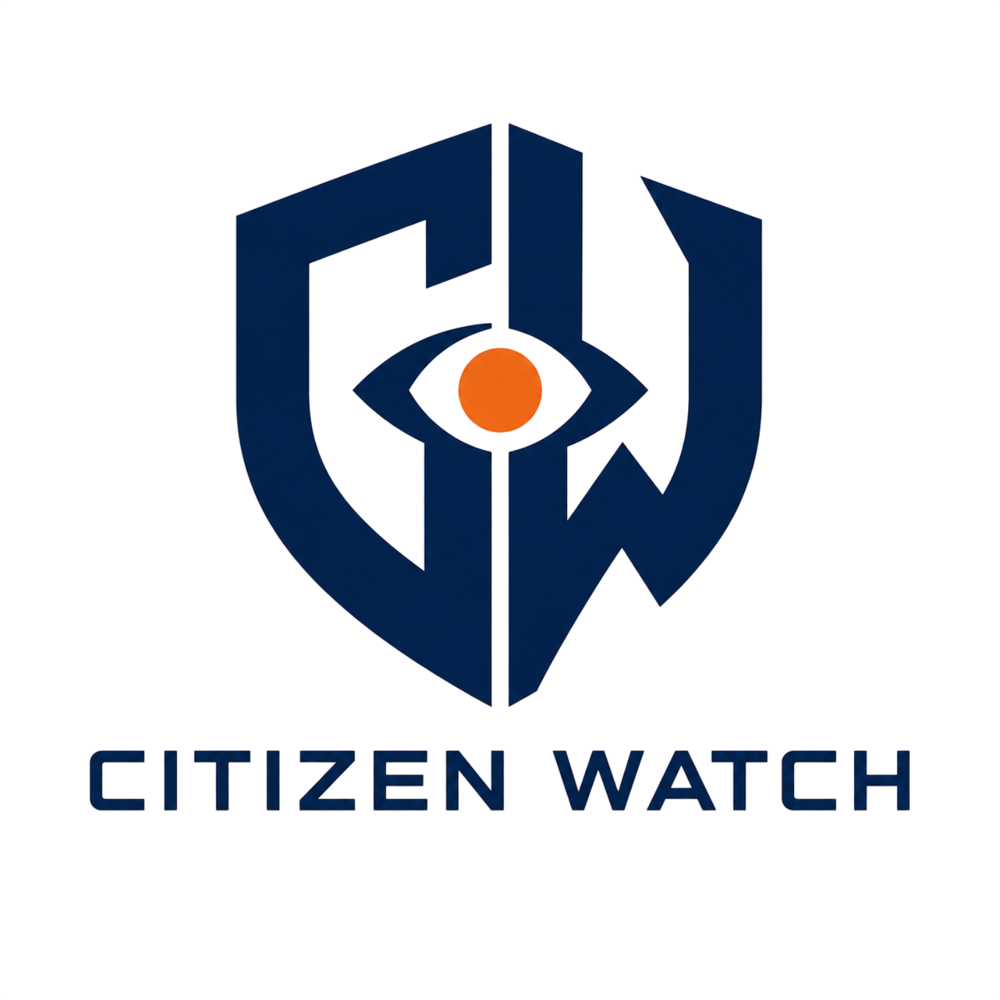

BARANGAY SICSICAN INITIATIVEA secure and confidential platform that allows citizens to report anomalies, track cases, and promote accountability in local governance.
Your submission is encrypted and identity-protected.
Deceased or unqualified individuals claiming LGU aid.
Rigged biddings or overpriced government supplies.
Officials demanding money for standard public services.
Infrastructure projects that are abandoned or don't exist.
Unauthorized individuals bypassing official LGU queues.
General misuse of public funds or government vehicles.
Fill out the form. You do not need to provide your name.
The system instantly generates a secure digital receipt.
The command center verifies the data and flags the department.
Enter your ID anytime to view the official resolution status.